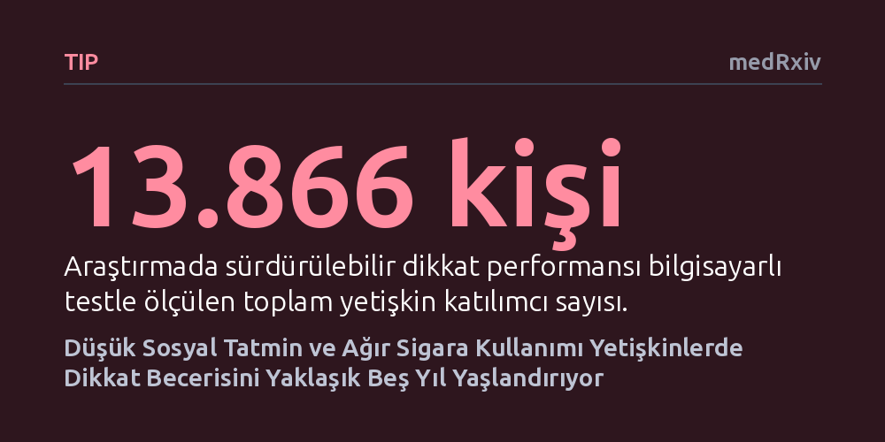

TIP · medRxiv · 2026-10-26
Araştırmacılar, 13.866 yetişkinde değiştirilebilir yaşam tarzı etkenlerinin sürdürülebilir dikkat üzerindeki etkilerini inceledi. Düşük sosyal tatmin ve ağır sigara kullanımının dikkat becerisini yaklaşık beşer yıl yaşlandırdığı, riskler birleştiğinde ise hasarın katlanarak arttığı belirlendi.
Zihinsel odaklanmanın yalnızca biyolojik yaşla değil, sosyal tatmin ve sigara gibi değiştirilebilir alışkanlıkların birbirini katlayan etkileşimiyle zayıfladığını gösteriyor.

İlerleyen yaşla birlikte dikkatimizi uzun süre tek bir noktada tutma ve zihinsel odaklanmayı koruma becerimiz kademeli olarak zayıflar. Anahtarları nereye koyduğunu unutmaktan ziyade, uzun ve dikkat gerektiren bir iş yaparken zihnin dağılması ya da dış uyaranlara karşı dürtüleri kontrol edememe şeklinde ortaya çıkan bu durum, sağlıklı yaşlanmanın doğal bir parçası kabul edilir. Ancak klinik olarak belirgin bir nörolojik hastalık ya da demans tanısı bulunmayan bireyler arasında dahi dikkat seviyesinde neden bu denli büyük uçurumlar görüldüğü sorusu tıp dünyasını uzun süredir meşgul etmektedir.
Zihinsel performanstaki bu gerilemenin herkes için aynı hızda ilerlemediği bilinmektedir. Beslenme, tütün tüketimi, kan basıncı ve sosyal çevre gibi günlük alışkanlıklarımızın beynimizin odaklanma kapasitesini nasıl etkilediği, geniş ve çeşitli toplum kesimlerinde yeterince aydınlatılamamıştı. Araştırmacılar, gündelik hayatın değiştirilebilir unsurlarının bu dikkat aşınmasını sessizce hızlandırıp hızlandırmadığını ortaya çıkarmak amacıyla yola çıktılar.
Araştırma ekibi, Amerika Birleşik Devletleri'nde yürütülen geniş kapsamlı 'All of Us' araştırma programından elde edilen 13.866 yetişkine ait verileri inceledi. Bu geniş katılımcı havuzunda dört temel değiştirilebilir yaşam tarzı unsuru mercek altına alındı: Günlük sigara tüketim miktarı, aşırı alkol tüketimi, sosyal tatmin düzeyi ve kan basıncı ölçümleri.
Katılımcıların sürdürülebilir dikkatlerini ölçmek için psikolojide 'Kademeli Başlayan Sürekli Performans Testi' (GradCPT) adı verilen bilgisayarlı bir dikkat görevi uygulandı. Bu görevde ekrandaki kent ve dağ manzaraları yavaşça birbirine dönüşürken, katılımcılardan belli manzaralarda bir tuşa basmaları, nadiren çıkan hedef dışı görsellerde ise kendilerini tutup basmamaları istendi. Bu yöntemle her bireyin algısal duyarlılığı, tepki süresi ve karar verme tutarlılığı ölçülerek tek bir birleşik bilişsel verimlilik puanı hesaplandı.
Elde edilen sonuçlar; katılımcıların yaş, cinsiyet ve etnik köken farklılıklarına göre istatistiksel olarak arındırıldı. Risk faktörlerinin zihin üzerindeki hasarını anlaşılır kılmak için her bir etkinin payı 'yaş eşdeğeri yıl' cinsinden ifade edildi. Böylece incelenen herhangi bir alışkanlığın dikkati kaç yıllık normal biyolojik yaşlanmaya eşdeğer bir düzeyde gerilettiği somutlaştırıldı.
Analiz sonuçları, dikkat performansının yaş ilerledikçe her yıl kademeli biçimde gerilediğini net olarak doğruladı. İncelenen değiştirilebilir alışkanlıklar arasında zihinsel dikkati en sert etkileyen unsur ise düşük sosyal tatmin oldu. Sosyal ilişkilerinden en az tatmin olan gruptaki bireyler, en yüksek doyuma sahip olanlara kıyasla dikkat testinde tam 5,33 yıllık yaşlanmaya denk gelen bir performans kaybı sergiledi.
Sigara kullanımında ise tüketim yoğunluğu arttıkça dikkat kaybının da derinleştiği belirgin bir doz-yanıt ilişkisi saptandı. Günde 20 adetten fazla sigara tüketen ağır içiciler, hayatı boyunca hiç sigara içmemiş bireylere kıyasla yaklaşık 5 yıllık bilişsel yaşlanma kaybı yaşadı. Buna karşılık, 2. evre yüksek tansiyonun dikkat üzerindeki olumsuz etkisi istatistiksel olarak anlamlı bir eşiğe ulaşmadı; aşırı alkol tüketiminde ise alkolü tamamen bırakanlar ya da ağır etkilere rağmen hayatta kalabilenlerin oluşturduğu istatistiksel yanlılıklar nedeniyle belirgin bir bağ yakalanamadı.
Araştırmanın en dikkat çekici bulgusu ise risk faktörlerinin bir arada bulunma biçiminde ortaya çıktı. Düşük sosyal tatmin ile ağır sigara kullanımı gibi riskler birleştiğinde, dikkat üzerindeki hasar bu iki faktörün tekil zararlarının toplamından çok daha büyük çıktı. Başka bir deyişle, sağlıksız yaşam alışkanlıkları dikkat mekanizmasına yalnızca birbirine eklenerek değil, birbirinin yıkıcı etkisini büyüterek zarar veriyordu.
Elde edilen sonuçlar, beyin sağlığı ve bilişsel kırılganlığın basit bir toplama işleminden ibaret olmadığını; faktörlerin birbirini tetiklediği etkileşimli bir model izlediğini gösteriyor. Özellikle yalnızlık ve sosyal memnuniyetsizliğin, sigara gibi bilinen fiziksel risklerle birleştiğinde bireyin odaklanma kapasitesini beklenenden çok daha sert bir biçimde yıprattığı anlaşılıyor. Bu durum, zihinsel dinçliği korumak için yaşam tarzı faktörlerine tek tek değil, bütüncül olarak yaklaşılması gerektiğine işaret ediyor.
Çalışma aynı zamanda GradCPT gibi kesintisiz dikkat testlerinin, henüz klinik bir hastalık belirtisi göstermeyen genel nüfusta erken evre bilişsel riskleri yakalamada duyarlı bir araç olabileceğini ortaya koyuyor. Bu tip bilgisayarlı ölçümler, gelecekte belirgin dikkat ve hafıza sorunları ortaya çıkmadan yıllar önce risk altındaki bireyleri tespit etme ve yaşam tarzı müdahaleleriyle koruma sağlama fırsatı sunabilir.